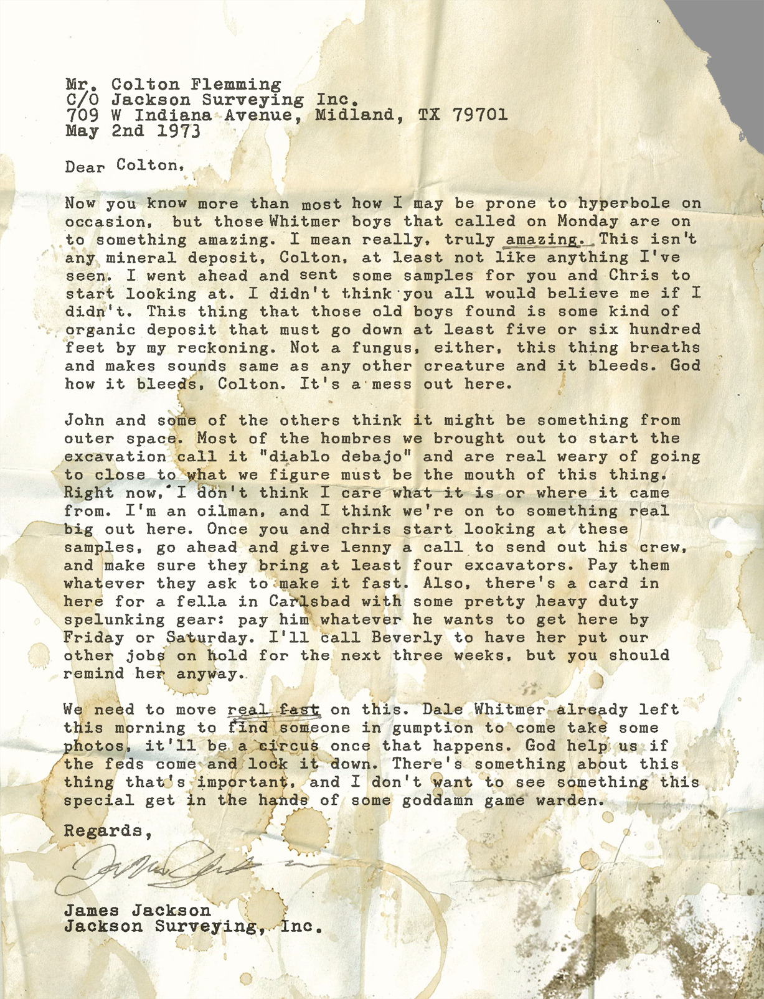
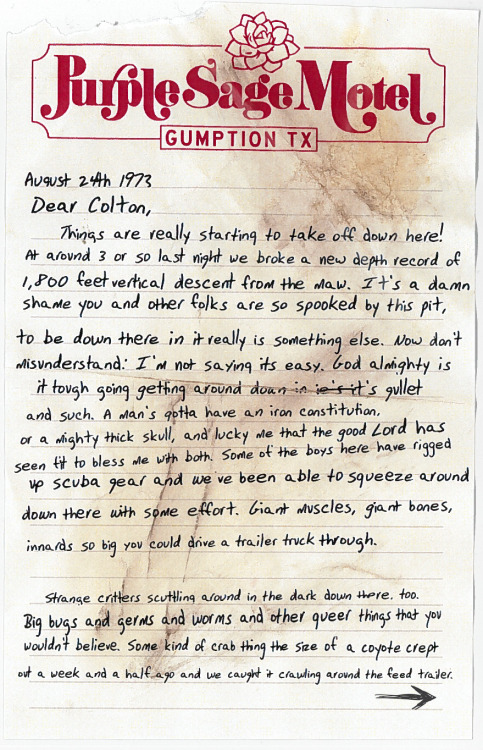
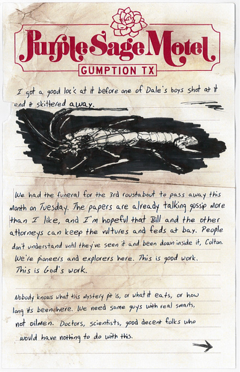
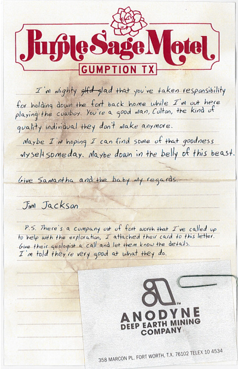
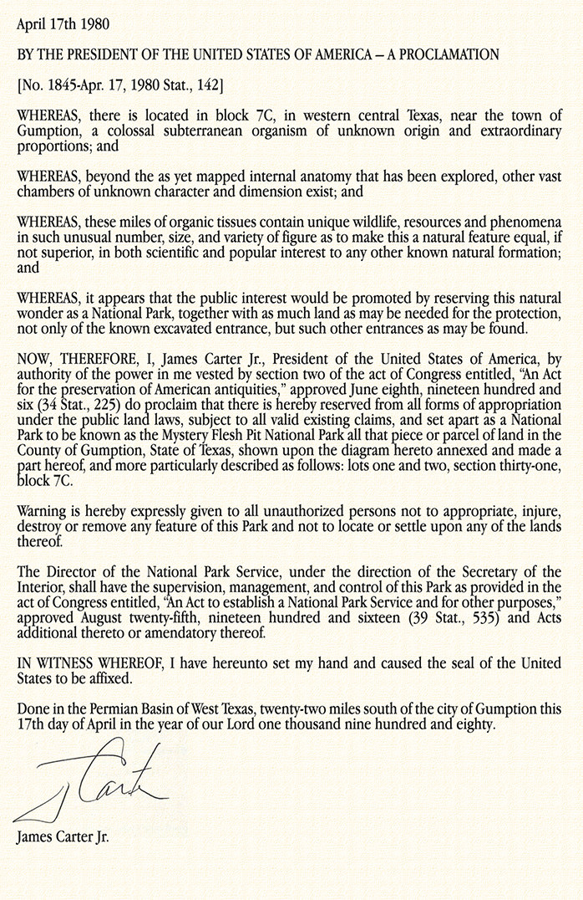

1973
   James Jackson wrote a series of letters to his friend explaining his discovery of the Permian Basin Superorganism.
Here is the first time we see the mention of Anodyne , deep earth mining company.
According to James, they were doing God's work.
1980
Photos of the April 1980 annexation which brought the Mystery Flesh Pit into the U.S. National Park System. President Carter, near the end of his presidency, met with D.o.I & Anodyne personnel at the entry site itself to officially sign the proclamation.
<-2007...